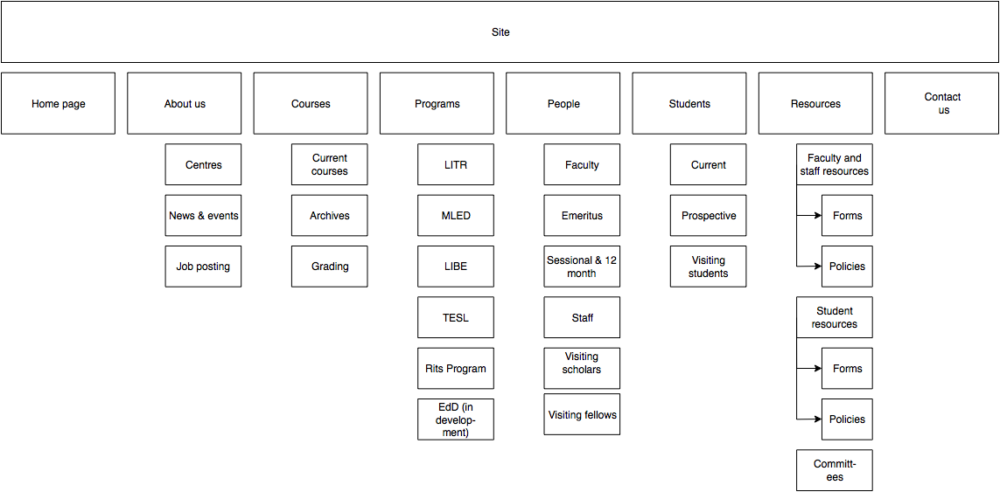

Site Structure¶
Page structure¶
Before editing each page and the user interface of the site, it is important to evaluate the site structure itself to make sure it is easy to navigate without any fancy styling / search feature added. The idea is to make sure the page hierarchy is intuitive to a first-time viewer, but also familiar to a faculty or staff member who just needs to get things done efficiently.
Proposed page structure¶
Option 1 for the page strucure is outlined below:
The proposed layout addresses the issue of making a site intuitive but also familiar for long term users. A major issue with the old website was the lack of distinction between who views a page - A new user seeking information vs an old user who needs access to resources and links.
Cleaning up the main menu
A short, clean main menu is important so as not to overwhelm new users of the site. The old layout of the site was largely clean and in step with most other UBC units, but the Visiting scholars and students section seemed out of place. Recognising that Faculty members need this to be accessible, it needed to be removed from the main menu, but still kept in an accessible location.
A possible result is to find a way group this together with Faculty and Staff but ensuring they remain a distinct group.
Grouping Visiting students with students
The students page on the old site has only prospective and current students listed. Adding the visiting students page here is intuitive as they are likely to describe themselves first and foremost as students, and would go to the link without much hassle. This leaves Visiting Scholars and Fellows to deal with.
Creating a People tab
The Visiting scholars and fellows pages can be moved to be grouped with the Faculty and Staff page. However, they are a distinct group and so the page can be renamed “People” to include all the groups it exhibits. The concept is similar to the one used on the ECPS department website, http://ecps.educ.ubc.ca/people/
This allows all the people involved to be easily explored in terms of area of expertise or research interests. In the old website, the Faculty and staff page has served a dual purpose in: 1. Showcasing faculty and staff members to prospective eyes. 2. Providing information and resources to existing faculty and staff members.
This can become confusing once the page is labelled People. To counter this all current Faculty and staff resources can be moved to a separate section.
Creating a Resources section
As a result, a Resources page can be created to serve as a point of reference for all documents such as forms, policies and applications. The new Resources page will be further split into a students section and a faculty and staff section. Prospective student pages can also cross-link to these new pages for application forms etc.
Note
Lia suggests that the Committees section should be moved from Resources to About Us.
Note
Chris likes the proposed layout. He is concerned about the prospective students page and emphasizes it should connect well to the application form / who to contact section so that it is easy to go from learning about programs to applying for them.